地政学
キシナウはEUへ近づくモルドバの政治中枢で、ルーマニア、ウクライナ、ロシア語圏、沿ドニエストル問題の圧力を受けます。戦争避難、エネルギー、情報戦、国境管理が、大通りのニュース、SNS、学校の会話に入り込みます。
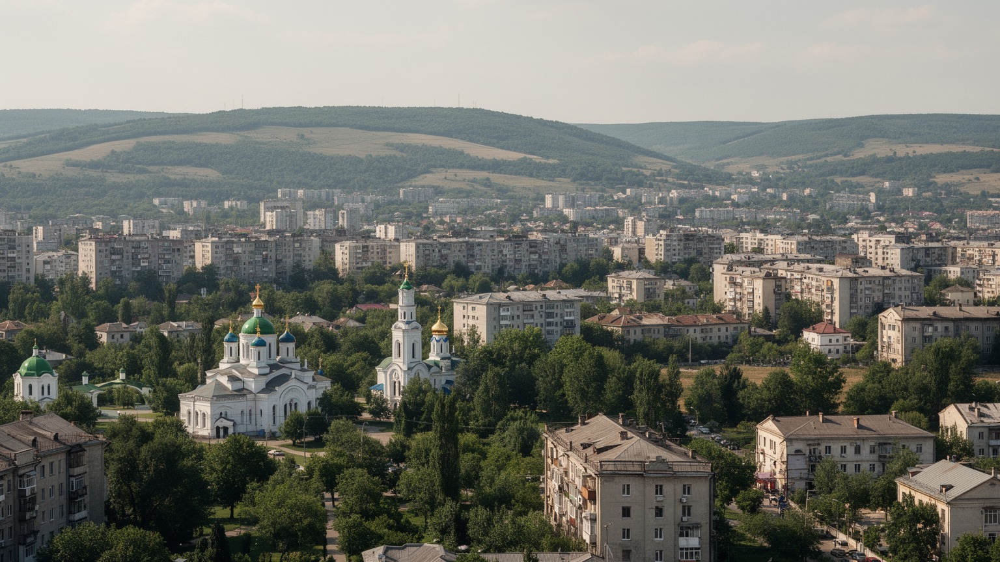
🇲🇩 モルドバ共和国 / 首都 / World City Atlas
ルーマニアとウクライナの間にある内陸国モルドバの首都です。官庁、大学、市場、ワイン経済、移民送金、正教会、ソ連期住宅、EU接近と戦争の影が、緑の多い丘陵都市に重なります。
都市の骨格
キシナウはビク川沿いの丘陵に広がり、中央大通り、政府広場、公園、ソ連期団地、大学、バザール、郊外のワイナリーを持ちます。EU接近、ロシア語圏の記憶、ウクライナ戦争、移民の送金が日常に近い首都です。
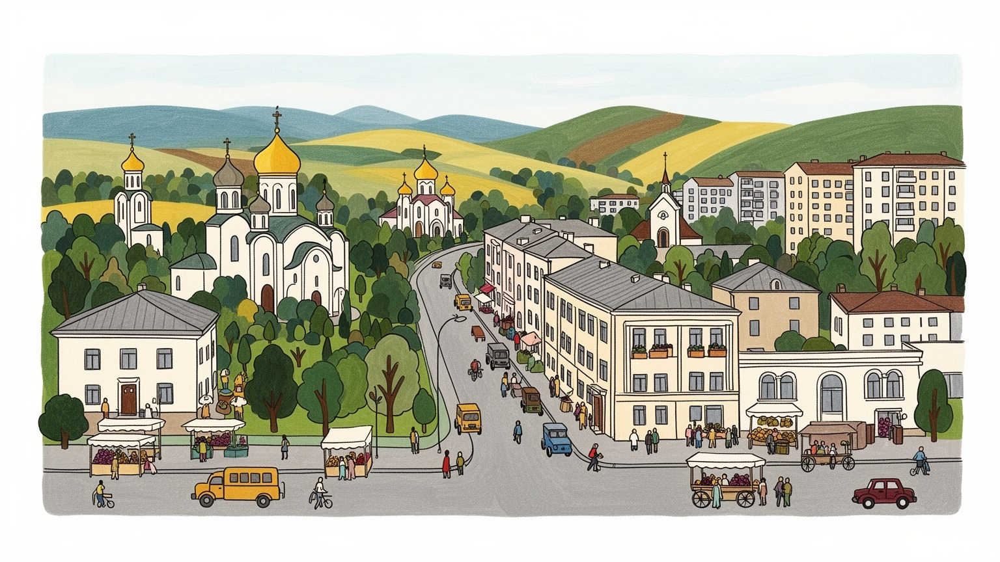
キシナウはEUへ近づくモルドバの政治中枢で、ルーマニア、ウクライナ、ロシア語圏、沿ドニエストル問題の圧力を受けます。戦争避難、エネルギー、情報戦、国境管理が、大通りのニュース、SNS、学校の会話に入り込みます。
雇用は行政、金融、IT、通信、教育、医療、小売、建設、食品加工、ワイン関連に広がります。国外へ働きに出る人の送金が家計を支え、帰国者の技能、夜の配達、小さなカフェ、若者の起業が都市経済を変えます。
ルーマニア語の日常、ロシア語の記憶、正教会の暦、ユダヤ史、ソ連期文化、ワイン祭、劇場、大学が重なります。家庭料理、市場の会話、合唱、ラジオ、クラブ音楽には、国境を越えてきた歴史が残ります。
住民は暖房費、住宅修繕、交通、物価、移民家族、公共サービスを調整しながら暮らします。旅行者は大聖堂、公園、中央市場、博物館、地下ワイナリーへ向かい、子どもや高齢者のいる中庭も首都の素顔を見せます。
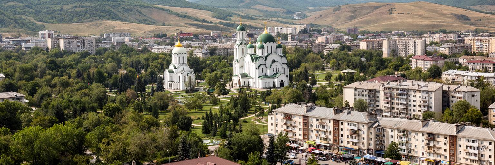
キシナウは、黒海沿岸の港を持たないモルドバの中心部に置かれた内陸首都です。ビク川沿いの丘陵、肥沃な黒土、ワイン畑へ続く道路、ルーマニアとウクライナへ向かう交通が都市の向きを決めています。地図上では欧州の周縁に見えますが、実際にはEU拡大、ロシアの影響、ウクライナ戦争、エネルギー供給、移民、国境管理が集まる敏感な場所です。街の中心には政府庁舎、大聖堂公園、シュテファン大公通り、大学、劇場、市場が近くにあり、徒歩で国家の象徴と日常の買い物を行き来できます。一方で都市の外縁にはソ連期の団地、戸建て住宅、未整備の道、郊外の新開発が広がります。キシナウの重要性は大都市の規模ではなく、政治、人口、金融、教育、医療、報道、外交、交通が集中する密度にあります。国土の多くが農村と小都市で構成されるモルドバでは、首都に仕事とサービスが集まりすぎる課題もあります。地方から来る若者、帰国した移民、外国の外交官、避難民、商人が同じ都市空間を使うため、キシナウは国家の希望と不安を同時に受け止めます。白い石の建築、並木の匂い、緑の公園の落ち着きの背後には、国境の政治と生活費の現実があります。首都を読むには、美しい中心部だけでなく、郊外の団地、バス停、送金で改修された家、農村へ向かうミニバスまで見渡す必要があります。街の近さが国の課題を見えやすくします。
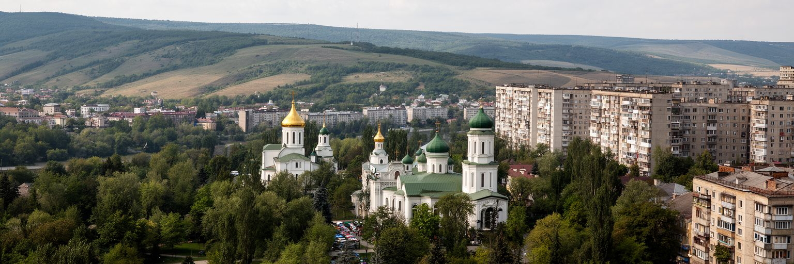
キシナウの政治は、国内統治だけでなく、モルドバがどの方向へ進むのかを示す舞台です。EU加盟交渉、司法改革、汚職対策、エネルギーの多角化、ロシア語圏住民との関係、沿ドニエストル問題、ウクライナ支援が、政府庁舎や議会、広場、テレビ局、裁判所の周辺で議論されます。モルドバは人口規模が小さく、国外で働く市民も多いため、選挙や政策は国内だけで完結しません。ルーマニア、イタリア、ロシア、ドイツ、ポーランドなどにいる移民の投票、送金、帰国投資も政治の重みを変えます。首都では改革への期待と生活不安が近く、欧州化の言葉が賃金、暖房費、年金、道路修理、病院の質に結びつかなければ、支持は揺らぎます。ウクライナ戦争以降、難民受け入れ、物流の迂回、電力とガスの調達、偽情報への対策は、首都行政の実務にもなりました。キシナウの広場は、独立後の国家建設、親欧州と親ロシアの対立、反汚職運動、市民の抗議を何度も受け止めてきました。政治都市としての成熟は、旗や宣言だけでなく、透明な行政、独立した司法、地方への配分、少数派の安心が暮らしに届くかで測られます。ラジオ、テレビ討論、SNSの短い動画、学生の集会も世論を動かします。市民が役所で受ける説明、公共調達の透明性、学校や病院の予算の届き方も、欧州化の実感を左右します。
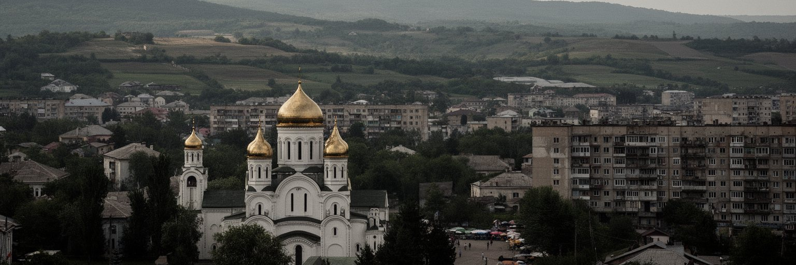
キシナウの日常には、沿ドニエストル地域という未解決の政治問題が常に近くにあります。ドニエストル川東岸の分離地域は、モルドバの主権、ロシアの軍事的影響、エネルギー、鉄道、貿易、住民の移動をめぐる難しい課題です。首都の住民が普段の買い物や通勤で常に緊張を意識しているわけではありませんが、国家予算、外交、治安、選挙、メディアの議論にはこの問題が深く入り込みます。さらにウクライナ戦争は、キシナウの安全保障感覚を大きく変えました。避難民の受け入れ、学校や住宅の支援、国境を越える物流、電力供給の不安、サイバー攻撃や偽情報への警戒が、都市の行政能力を試しています。鉄道駅、バス停、空港、ホテル、NGOの事務所は、人と情報が移動する現場になりました。戦争の影は、軍事施設だけでなく、暖房費の請求書、食品価格、報道への信頼、子どもの学校の教室にも表れます。キシナウを安全保障から読む時、戦車や国境線だけを見ても足りません。市民が安心して働き、少数派が排除されず、避難民が一時的な客ではなく人として扱われ、エネルギー供給が政治的圧力に左右されにくくなることが重要です。小さな首都は、欧州の大きな緊張を生活の距離で受け止めています。支援窓口、学校の通訳、地域ラジオの案内、寄付を集める若者のSNSも、危機の中で安心を支えます。
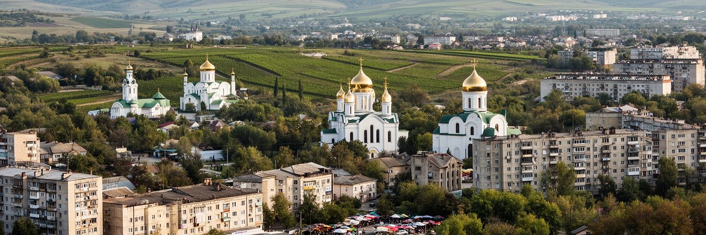
キシナウの経済を語る時、ワインと食品は欠かせません。モルドバは長いワイン文化を持ち、首都の近くにはクリコヴァやミレシュティ・ミチの巨大な地下ワイナリーがあります。ブドウ畑は地方に広がりますが、輸出、販売、観光、品質管理、物流、デザイン、金融、研究、人材はキシナウへ集まります。ワインは名産であるだけでなく、ソ連時代の市場依存から、欧州やアジアへ販路を広げる経済転換の象徴でもあります。食品加工、乳製品、果物、野菜、菓子、レストラン、カフェ、中央市場も、農村と首都を結びます。プラチンタ、ママリガ、チーズ、蜂蜜、季節の果物は、家庭の食卓と観光の記憶を近づけます。地方の農家が収穫したものは、首都の卸売、加工場、小売、輸出業者を通じて価値を変えます。ただし、農業と食品産業は気候、燃料、肥料、為替、物流、認証制度に弱く、輸出先の政治にも左右されます。若い起業家は、地元品を現代的な包装、週末市、ワイン祭、観光体験に変えようとしていますが、資金、技能、安定した規制環境が必要です。キシナウのレストランで出されるワインや家庭料理の背後には、農村の労働、移民からの投資、輸出市場への努力があります。観光客が地下ワイナリーを訪れる時、その魅力は地下の長い坑道だけではありません。試飲室の接客、ラベル制作、輸送、通訳も新しい雇用を広げます。
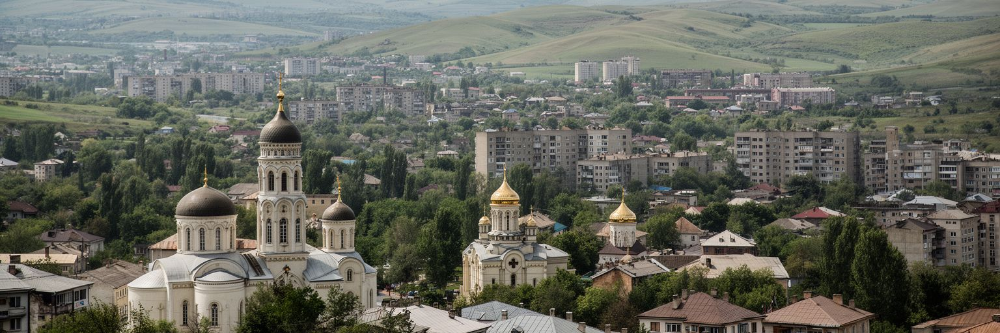
キシナウの暮らしは、国外へ働きに出る人びとの送金と切り離せません。モルドバでは長く、ルーマニア、イタリア、ロシア、ドイツ、英国、イスラエルなどへ移動して働く人が多く、首都の住宅改修、教育費、医療費、小商い、車の購入、結婚式の費用にも送金が使われてきました。空港、国際バス、銀行、両替所、携帯電話ショップは、移民経済の都市インフラです。国外で介護、建設、清掃、農業、サービス業に従事する家族の収入が、キシナウの家計を支える一方、家庭の分離、子どもの養育、高齢者の孤立、帰国後の再就職という課題も生まれます。若者にとって、国外へ出ることは希望であり、国内の賃金が低いことへの反応でもあります。首都には大学やIT、金融、行政の仕事がありますが、能力のある人ほど移住を選ぶ場合もあります。近年は帰国者が小さな店、カフェ、デザイン、ワイン観光、技術サービスを始め、欧州で得た技能や感覚を都市に戻す動きも見えます。移民送金は貧困を和らげますが、制度や産業が育たなければ、都市の発展を外部収入に頼りすぎる危険もあります。キシナウを歩くと、新しい窓や屋根の家、海外ナンバーの車、空港行きの荷物、祖父母と暮らす子ども、ビデオ通話でつながる家族が見えます。首都の成長は、ここにいる人だけでなく、外で働く人の時間と犠牲によって作られています。離れて暮らす親子の感情も、都市の見えない負担です。
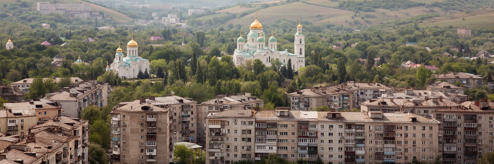
キシナウの都市形態は、戦争と地震で傷んだ旧市街、戦後のソ連式計画、大通り、公園、集合住宅団地、独立後の商業開発が重なってできています。中心部には白い石灰岩を使った建築、劇場、官庁、教会、公園が残り、外側にはボタニカ、ルィシュカニ、ブユカニ、チョカナなどの住宅地区が広がります。ソ連期の団地は単調に見えるかもしれませんが、中庭、学校、幼稚園、商店、バス停、トロリーバスの動線が日常を支えています。老朽化した配管、断熱、エレベーター、暖房、外壁の補修は大きな課題で、冬の寒さとエネルギー価格は家計を圧迫します。独立後には新しい集合住宅や商業施設も増えましたが、駐車場不足、歩道の占有、緑地の減少、歴史的建築の解体をめぐる議論が続きます。キシナウは緑の多い首都として語られますが、その緑は自然に守られるものではありません。公園、並木、中庭、川沿いの空間を維持するには、市民の利用と行政の管理が必要です。都市を読む時、建物の様式だけでなく、暖房の効き、階段室の清潔さ、子どもの遊び声、高齢者がベンチに座れる距離、夜の照明、小さな食料品店を見なければなりません。団地は過去の遺産であると同時に、現在の住まいです。ここを丁寧に改修できるかが、キシナウの生活の質を大きく左右します。屋上、地下室、配管を誰が直すのかという管理の課題も、共同住宅の未来を決めます。
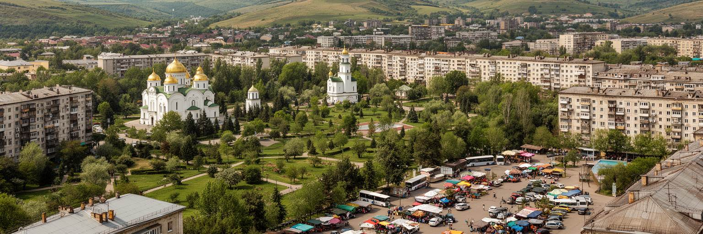
キシナウの文化は、言語と信仰の重なりから見えてきます。公的にはルーマニア語が中心ですが、ロシア語も日常会話、商店、メディア、世代間の記憶の中で広く聞こえます。ウクライナ語、ガガウズ語、ブルガリア語、英語も、移動と教育の広がりの中で存在感を持ちます。言語は便利な道具にとどまらず、歴史認識、政治的帰属、教育、就職、家庭の記憶と結びついています。正教会は都市の暦を形作り、復活祭、クリスマス、結婚、葬儀、聖人の日が家族と近所の時間を整えます。中心部の大聖堂や小さな教会は、観光名所である前に、生活の不安を受け止める場所です。キシナウにはユダヤ人共同体の歴史もあり、かつての繁栄、ポグロム、ホロコースト、移住の記憶は、都市の明るい公園だけでは語りきれない層を作っています。ソ連期の世俗文化、音楽学校、劇場、文学、映画、独立後の欧州志向も重なります。クラシックの教育、合唱、フォーク、ロック、クラブの夜、ワイン祭の舞台は、世代の違う市民を別々のリズムで結びます。多言語の都市では、翻訳と説明の質が行政へのアクセスを左右します。キシナウの街角で聞こえる言葉、教会の鐘、市場の呼び声、大学の講義は、この首都が東西の境界で単純な一色に染まらず、多層の記憶を抱えていることを示しています。家庭で話す言葉と学校で使う言葉の距離は、子どもの自信にも関わります。
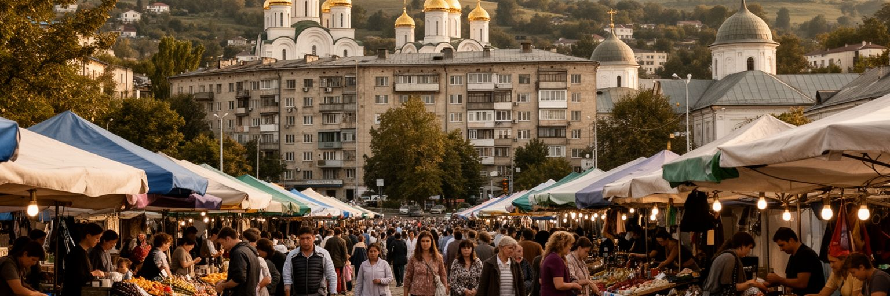
キシナウの日常を最も近い距離で見せる場所の一つが中央市場です。果物、野菜、チーズ、肉、蜂蜜、花、衣料、日用品、修理部品、携帯用品が並び、農村から来た売り手、都市の年金生活者、レストランの仕入れ、学生、観光客が交差します。市場の値段は、季節、燃料費、為替、輸入、ウクライナ戦争による物流、電力料金、農村の収穫を反映します。モルドバの家計では食費と光熱費の重みが大きく、物価が上がると、年金世帯や低賃金労働者ほど選択肢が狭まります。キシナウの住民は、スーパー、市場、近所の小店、親族から届く野菜、国外からの荷物を使い分け、生活費を調整します。トロリーバスやミニバスで通勤し、古い団地を修繕し、冬の暖房を気にし、子どもの教育費や親の医療費を計算する日常は、首都の華やかなカフェとは別の現実です。市場は観光客にとって色と香りの場所ですが、住民にとっては信頼、値段交渉、少量購入、季節の保存食、噂話、政治への不満が集まる公共空間です。通路にはパンの匂い、チーズの塩気、花の湿り気、売り声が混ざり、買い物は情報交換にもなります。衛生、屋根、排水、歩行安全、公共交通との接続を整えながら、生活の厚みを守ることが大切です。キシナウの家計は、市場の小さな価格札に敏感に反応しています。売り手との顔なじみの関係も、暮らしの安心を支えます。
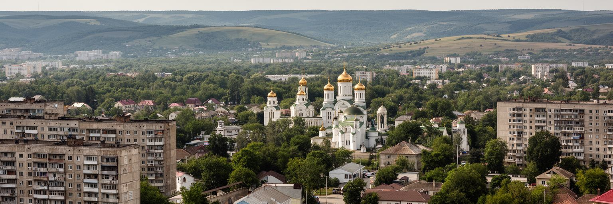
キシナウの交通は、市内移動と国際移動が強く結びついています。中心部ではトロリーバス、バス、ミニバス、タクシー、徒歩が主要な移動手段で、住宅地区、大学、病院、市場、官庁を結びます。トロリーバスは環境面でも重要ですが、老朽化、混雑、運行間隔、道路の渋滞、歩道の安全は改善が必要です。鉄道駅と国際バスターミナルは、国内の地方都市、ルーマニア、ウクライナ、さらに欧州各地へ向かう移動の入口です。空港は移民労働、留学、出張、帰省、観光を支え、国外に家族を持つ住民にとって感情の強い場所でもあります。ウクライナ戦争以降、道路と空港は避難、支援物資、外交、代替物流の役割も担いました。内陸国であるモルドバにとって、港へのアクセスは隣国の道路、鉄道、国境手続きに左右されます。首都の企業や消費者は、物流費と国境の安定に敏感です。市内では自家用車の増加が駐車場不足、渋滞、大気汚染、歩道占有を生み、公共交通と歩行者を弱くします。交通政策を道路容量だけで考えると、高齢者、学生、低所得者、障害者、夜に働く配達員や店員の移動を見落とします。バス停の照明、アプリの案内、運賃のわかりやすさも生活の質です。キシナウの移動を改善することは、国内外に広がる家族、仕事、学び、物流を、より安く、確実に、安全につなぐことです。首都の距離が短くなれば、機会へのアクセスも公平になります。
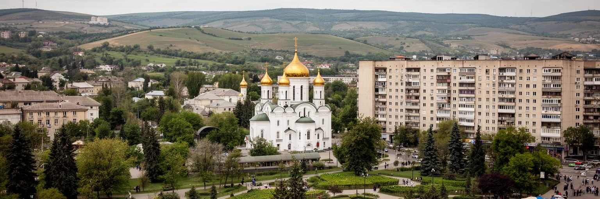
キシナウの観光は、派手な名所の連続ではなく、静かな首都を歩きながら国の歴史と暮らしを読む形がよく合います。大聖堂公園、凱旋門、シュテファン大公像、国立歴史博物館、美術館、劇場、中央市場、古い住宅街、ソ連期のモザイクや団地を巡ると、帝政、ルーマニア期、ソ連期、独立後の層が見えてきます。街路は緑が多く、カフェや小さな書店、ワインバーも増え、短い滞在でも歩きやすい中心部があります。郊外へ出れば、クリコヴァやミレシュティ・ミチの地下ワイナリーがあり、長い坑道、熟成庫、試飲、料理、ワイン祭を通じてモルドバの文化経済を体験できます。ただし観光を明るいワインと公園だけに限ると、ユダヤ史、戦争の破壊、ソ連期の強制的な近代化、移民で空いた家庭、近年の安全保障不安を見落とします。キシナウを丁寧に歩くには、正教会の祈り、市場の値段、団地の中庭、駅の出発案内、避難民支援の痕跡にも目を向ける必要があります。観光が地元のガイド、工芸、飲食、公共交通、博物館の維持に届けば、首都は通過点ではなく、国を理解する入口になります。大都市的な刺激は少なくても、落ち着いた通りの奥に東欧の複雑な二十世紀と現在の選択が折り重なっています。キシナウの旅は、静けさを読む旅です。地元の案内人と歩けば、見過ごしやすい記憶の場所も立ち上がります。
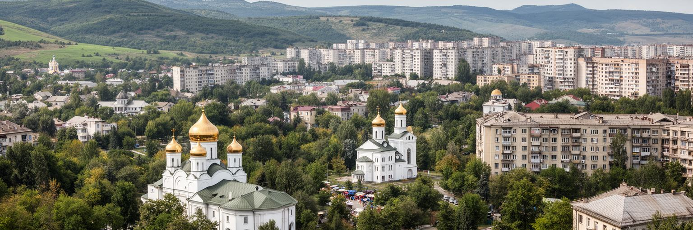
キシナウは、世界の巨大都市と比べれば人口も経済規模も小さい首都です。それでも、現代の都市を読むための重要なテーマが驚くほど濃く集まっています。EU接近とロシアの影響、沿ドニエストル問題、ウクライナ戦争、移民送金、ワインと農業、ITと若者、ソ連期住宅、正教会、多言語社会、エネルギー価格、緑地の保全が、白い石の中心部と団地の中庭、市場、空港、地下ワイナリーの間でつながっています。首都の魅力は、華やかなスカイラインではなく、国がどの未来を選ぶのかが生活の細部に表れる点です。欧州化は制度の言葉で語られますが、市民にとっては裁判所の信頼、病院の質、バスの運賃、暖房費、学校の選択、海外へ出なくても暮らせる仕事として意味を持ちます。キシナウを読む時には、政府広場だけでなく、中央市場、トロリーバス、団地の階段室、教会の行列、空港の別れ、ワイン畑への道を同じ地図に置く必要があります。そこには、小国が地政学の圧力を受けながら、文化と労働と家族の力で都市を保とうとする姿があります。静かな公園のベンチ、冬の暖房、送金で直した窓、若い起業家の店は、国の将来を測る小さな指標です。キシナウは周縁ではなく、東欧の選択が日常の距離で見える首都です。小さな改善が積み上がるほど、移民に頼りすぎない都市の自信も少しずつ育ちます。